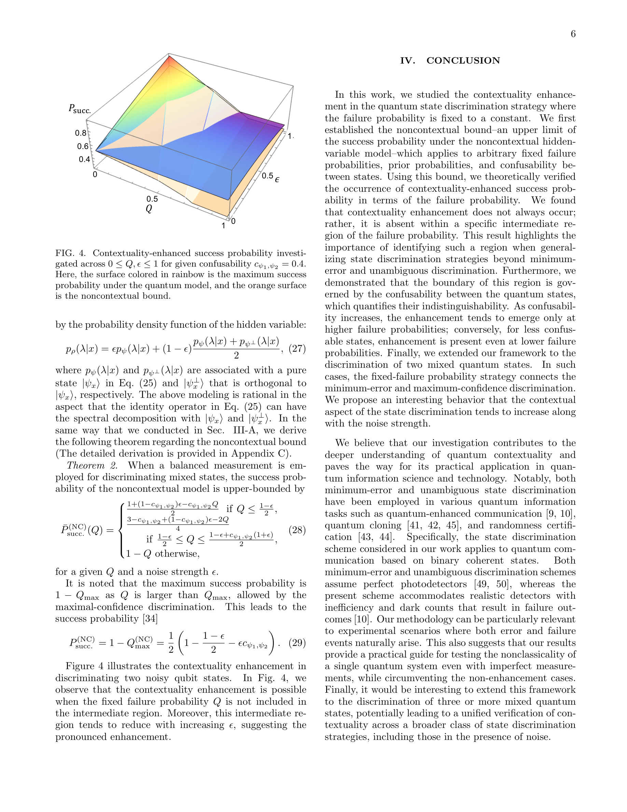

저자: Min Namkung, Hyang-Tag Lim | 날짜: 2026 | DOI: 10.1103/zx3b-y3fc
고정된 실패 확률 조건에서 양자 상태 판별의 맥락성(contextuality) 향상을 이론적으로 입증하고, 맥락성 향상이 사라지는 중간 실패 확률 범위가 존재함을 보여준다.

Figure 4 illustrates the contextuality enhancement in
총평: 본 논문은 고정 실패 확률 조건에서 양자 맥락성 향상의 매우 섬세한 구조를 처음으로 규명하였으며, 비향상 영역이라는 새로운 현상을 발견하여 양자 상태 판별의 근본적 이해를 크게 진전시켰다.